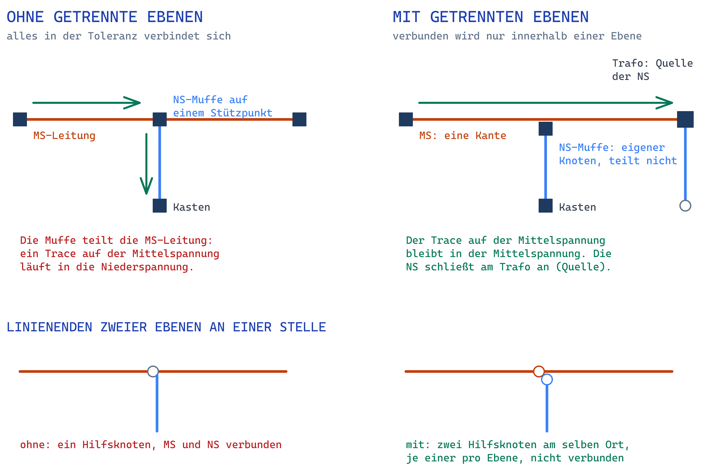

Blatt 7 · Ebenen und Verbinden
Ebenen getrennt halten
Mittel- und Niederspannung werden oft von verschiedenen Abteilungen gepflegt. Ihre Elemente liegen dann zufällig aufeinander: eine Niederspannungsmuffe auf einem Stützpunkt einer Mittelspannungsleitung. Ohne weitere Angaben würde der Builder die Leitung dort teilen und die Ebenen verbinden. Ein Trace auf der Mittelspannung liefe dann in die Niederspannung.

Die Ebene ist die erste Facette
- Jeder Wert der ersten Facette des Typs ist eine Ebene (Tier), z. B. Mittelspannung und Niederspannung. In gView ergibt meist eine Gruppe im Inhaltsverzeichnis die Ebene.
- Kanten gehören zur Ebene ihres Typs. Ein Knoten gehört zur Ebene seines Typs und zu jeder Ebene, deren Kanten ihn berühren: Ein Trafo liegt in beiden.
- Eine Ebene kann Einstellungen haben: Rang (oben vor unten), Quellen, Senken und gesperrte Knoten. Suchen auf einer Ebene verwenden diese (Blatt 5).
Wer entscheidet
Was verbunden wird, ist Fachwissen. Deshalb entscheidet der Host, und zwar nach Typen: Der Builder fragt für jedes Paar aus Knotentyp und Kantentyp einmal nach und merkt sich die Antwort.
| Frage des Builders | Gefragt mit | Antwort |
|---|---|---|
| Schließt dieses Linienende an diesen Knoten an? | Knotentyp, Kantentyp | verbinden · ignorieren · melden |
| Teilt dieser Knoten das Innere dieser Linie? | Knotentyp (oder Hilfstyp eines T-Stoßes), Kantentyp | teilen · ignorieren · melden |
| Welchen Typ hat der Hilfsknoten am Ende dieser Linie? | Kantentyp | der Hilfstyp der Ebene |
| Dürfen diese Punkte nebeneinanderliegen? | Knotentyp | die Partition: die Ebene |
Melden heißt: nicht verbinden, aber im Bau-Log mit Ort und beiden Objekten ausgeben. Das ist für Stellen, die wahrscheinlich ein Datenfehler sind. Ignorieren ist für Stellen, die erwartet sind, z. B. die Muffe einer anderen Ebene.
So fällt die Entscheidung in gView
- RegelnDie erste passende Verbindungsregel gewinnt, z. B. „Trenner der Niederspannung teilen Niederspannungsleitungen“.
- QuellenLinienenden einer Ebene schließen an die Quellen ihrer Ebene an: die Niederspannung an den Trafo.
- EbenenMit getrennten Ebenen wird zwischen verschiedenen Ebenen nicht verbunden und nicht geteilt.
- StandardSonst gilt für das Teilen: „Knoten auf einer Linie“ und „Linienenden auf einer Linie (T-Stöße)“, je verbinden, ignorieren oder melden. Ohne Einstellung wird alles verbunden, wie bisher.
Sind die Linien im GIS schon an den echten Knoten aufgetrennt, kann man sagen: Kein Knoten teilt eine Linie, nur die Trenner der Niederspannung, die irgendwo auf eine Leitung gesetzt werden. T-Stöße werden gemeldet. Ein T-Stoß, der nicht geteilt wird, bleibt unverbunden; die Meldung zeigt, wo nachzubessern ist.
Mehrere Knoten an einer Stelle
Echte Knoten
Punkte verschiedener Ebenen an derselben Stelle sind kein Konflikt, sie bleiben zwei Knoten. Darf aber ein Linienende an mehrere von ihnen anschließen, werden sie zusammengeführt: Der Layer weiter oben im Inhaltsverzeichnis gewinnt, die anderen werden Aliase.
Hilfsknoten
Jede Ebene hat ihren eigenen Hilfstyp. Linienenden fassen sich nur mit Enden desselben Hilfstyps zusammen. Ein Übergang zwischen Ebenen braucht also immer einen echten Knoten, ohne Betriebsmittel gibt es keine Verbindung.
Beim Suchen über einen Ort (@x,y oder ein Klick in Carto) wählt die Ebene der Suche den passenden Knoten, siehe Blatt 5.